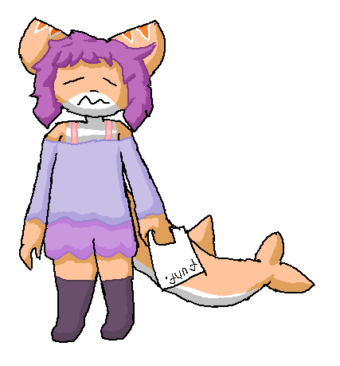

Stefan
 Profile:Sex: Male (thinks as Female)
Biological class: Tiger Shark
Country where born: Fur (now Lang)
Age: 17
Date of born: 13.11.16M
Date of created: 22.01.2023
Work: Student of Trade School in country Edu
Parents:
Mother: Nora
Father: Andrew
Currency plan: 2nd plan(~7000S) from 1st plan(~16000S)
Intrestings: trade manager, reader, writer of fan fiction
Traits: Melanholic (in lonely), Playful (when met a joyful person(s)), Behevolent (with a person who broke down)
Stefan was born in rich family only child. His mother, Nora was happy with it, but not much as money. His parents was busy, and he decided to read some books. It was an adventure books. Stefan was so impressed, what decided to write fan fictions and share it with a group of fanats of books. They liked it, and Stefan started a writer career. Gray - "When Stefan is going to us, he was so unpatiently, and he said - "Hey guys! Guess what? I wrote my own fan fiction, it's called "Tension Games", who decide to read this?". when I read it, I was suprised his work".
He also read some fan fictions of adventure books by fanats of books with non-traditional relationship. Stefan - "They was so passionate, what was inspired to be not traditional and become more modern". One time, he read a fan fiction "Jimmy's life as trans". Stefan - "The fan fictions is looks for me a little confused, like, "why Jimmy is looking for men and then is going to date with him?". When explained this, then I want to be a different, to be more cute and live with attraction".
One time, Stefan with his family made a trip around the country Fur, and one time, he saw Jania, what she made a hang out. One time, he decided to go to hang out with her. First of all, Stefan met her and started to ask group about books. No one haven't answered it. But he rightly saw, what everyone in her group was happy. Stefan decided what he in her happy group isn't happy. Jania has tried to appologise with it and promise, what she can fix it, if he pays for her 100S. Stefan accept it and Jania a is tried to introduce for her group and said "Here's a new piece of our hang zone! Meet him! Stefan!". After this words, Stefan started to suspect of robbering him. When all started to cheering up, he started thought, what all of then will demanding from him money. After that, he ran from that. After that, he started to believe, what happy in group is wealth, but he spend so much, what in next normalizing, he was moved to 2nd plan.
Stefan one time got a letter about visiting to the literature group. When he came there, Stefan was suprised of his present in Valentine cycle. Stefan saw in the present a Jimmy plush with heard and mark "Grace for the best writer of fan fictions". He knew about Grace, it was a member of the group, but at this time, she wasn't there. Stefan started to connecting to her. He thanked Grace for the present and asked her, where she is. Grace is ill and she waiting until full treatment of the disease to hug him.
Stefan had wrote a fan fiction about joyness of main character of "John Smiller is leaving a broom". He had writed, what John was tried to impress his loving character and making with her pretty off things. When Stefan writed the fan fiction, he became hunger. He opened jar of apricot jam and it was so taste, what Stefan added this to his fan fiction literaly. In the next cycle he showed this with the group. They wasn't excited with it, and just went to Grace. She was confused with jam, but when Stefan explained this, Grace understood and hugged him.
One time, Stefan's parents invited his friends to a trip to Anime. All his friends accepted, except Grace. She wanted to go with Stefan, but her parents didn't wanted. They - "We think, let Grace will be with us". They started to arguing with Grace. At night, Stefan sneakly walked to Grace's room. Stefan - "Hey Grace! I heard your argued, but I was disagree with your parents. So, I decided to take you". Grace - "Really? Of course I will be with you!". Stefan - "Are you have love attration?". Grace(embarassing) - "No...". Stefan - "So, are we going?". They sneakly left Grace's home and Stefan told his parents, time to begin. All friends, including Grace, Stefan and his parents left Fur by floating vehicle. They arrived to the Anime. Stefan's friends was impressed, even himself. Stefan - "It's so different place for me, I think we will stay there for a while". [next]
After declearing every country a 4th Mind war, Stefan and all his friends got, why are they arrived to the "trip". They was worried about their parents, especially Grace and Gray. Stefan's parents - "Don't worry, they will be okay". Gray - "Don't worry? How? Why are you didn't take our parents. They also are the great part of our comfort. Are you decided, what you, as Stefan's parents are also great parents for us???". Stefan's parents - "Listen you all. We haven't expected about that. Are you think, we predicted the Mind war?" Grace - "My parents, when I sneakly left my home, they won't realised, what the Mind war was ahead. I exactly can say, what agreed to arrive to Anime only for Stefan". Stefan hugs Grace and said - "Dear. I don't expected that...". Stefan's parents - "Stefan. Leave her alone. We have to said, what that's all right". Stefan - "I won't do this, let me did that". Stafan(loudly) - "Hey you all! Are you see, we all stuck there, not even you. I with my parents also stuck there, and we can't arrive anywhere too. So why are you mad about that? Your parents also stuck, but in their psyhology bubble. They tried to keep you young, and I think, it's time to grow up!".
Gallery:


 [by @Uki7UqvfzqQJ36j]
[by @Uki7UqvfzqQJ36j]